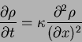

|  | (1) |
#include <stdio.h>
#include <math.h>
#define size 100
static Repeat=1000;
static double f0[size],f1[size],f2[size], omega=1, T=0.3;
void init(){
int i;
double density;
for (i=0;i<size;i++){
density=(2+sin(2*M_PI*i/size));
f0[i]=density*(1-T);
f1[i]=density*T*0.5;
f2[i]=density*T*0.5;
}
}
void iterate(){
int i;
double density,tmp1,tmp2;
for (i=0;i<size;i++){
density=f0[i]+f1[i]+f2[i];
f0[i]+=omega*(density*(1-T)-f0[i]);
f1[i]+=omega*(density*T*0.5-f1[i]);
f2[i]+=omega*(density*T*0.5-f2[i]);
}
tmp1=f1[size-1];
tmp2=f2[0];
for (i=1;i<size;i++){
f1[size-i]=f1[size-1-i];
f2[i-1]=f2[i];
}
f1[0]=tmp1;
f2[size-1]=tmp2;
}
int main(){
int i;
init();
for (i=0;i<Repeat;i++) iterate();
return 0;
}
This is a very simple program which currently only consists of the
main computational kernel. It does not ``do'' anything yet, since
it has no output. It has been my general experience that the actual
computation can usually be written in a succinct bit of code whereas
the analysis and output make up the main part of the code. And this
analysis tends to be so individual that there is little guidance in
how to write this bit of the code.
Now we want to see what the code actually does. So we would like to
see what the density is at each new time step and how it evolves. We
might want to be able to re-initialize the simulation and maybe to
initialize it with different initial conditions. Also, we might want to
be able to change the size of the simulation. And on the fly, we might
want to be able to change the diffusion constant which in this
simulation is
 . So we might want to change the
two parameters independently so that we can examine how the numerical
errors differ for the two approaches.
. So we might want to change the
two parameters independently so that we can examine how the numerical
errors differ for the two approaches.
This may sound like quite a laborious task, but this is exactly what the mygraph library was designed to do. What we have to do is to tell the library which data we want to look at, give it some hints about its size, and it will be able to display it appropriately. We will also need a few other control variables to be able to tell the program that it should pause, run for only one step at a time, or that it should re-initialize. So this program, with a full graphical user interface (GUI),2 would look like this:
#include <stdio.h>
#include <math.h>
#include <mygraph.h>
#define SIZE 100
static int size=SIZE,Repeat=1000,done=0,sstep=0,pause=1;
static double f0[SIZE],f1[SIZE],f2[SIZE], omega=1, T=0.3,Amplitude=1;
static double density[SIZE];
static int densityreq=0;
void init(){
int i;
for (i=0;i<size;i++){
density[i]=(2+Amplitude*sin(2*M_PI*i/size));
f0[i]=density[i]*(1-T);
f1[i]=density[i]*T*0.5;
f2[i]=density[i]*T*0.5;
}
}
void init2(){
int i;
for (i=0;i<size;i++){
if (2*i>=size) density[i]=2+Amplitude; else density[i]=2-Amplitude;
f0[i]=density[i]*(1-T);
f1[i]=density[i]*T*0.5;
f2[i]=density[i]*T*0.5;
}
}
void iterate(){
int i;
double tmp1,tmp2;
for (i=0;i<size;i++){
density[i]=f0[i]+f1[i]+f2[i];
f0[i]+=omega*(density[i]*(1-T)-f0[i]);
f1[i]+=omega*(density[i]*T*0.5-f1[i]);
f2[i]+=omega*(density[i]*T*0.5-f2[i]);
}
tmp1=f1[size-1];
tmp2=f2[0];
for (i=1;i<size;i++){
f1[size-i]=f1[size-i-1];
f2[i-1]=f2[i];
}
f1[0]=tmp1;
f2[size-1]=tmp2;
}
void GUI(){
DefineGraphN_R("Density",density,&size,&densityreq);
StartMenu("GUI",1);
DefineDouble("T",&T);
DefineDouble("omega",&omega);
StartMenu("Restart",0);
DefineMod("size",&size,SIZE+1);
DefineDouble("Amplitude",&Amplitude);
DefineFunction("Restart sin",&init);
DefineFunction("Restart step",&init2);
EndMenu();
DefineGraph(curve2d_,"Density graph");
DefineBool("Pause",&pause);
DefineBool("Single step",&sstep);
DefineInt("Repeat",&Repeat); DefineBool("Done",&done);
EndMenu();
}
int main(){
int i;
init();
GUI();
while (!done){
Events(1); /* Whenever there are new data the argument of
Events() should be nonzero. This will set the
requests for data so that you can calculate them
on demand only. For this simple program you can
always set it to one. */
DrawGraphs();
if (!pause || sstep){
sstep=0;
for (i=0;i<Repeat;i++) iterate();
} else {
sleep(1);/*when the program is waiting it returns the
CPU time to the operating system */
}
}
return 0;
}
Let us go briefly through the new additions to the program which
implement the GUI. The function GUI() tells the graphical
user interface about the data to display and the variables we want to
be able to change interactively. Firstly we have the one-dimensional
density field that we want to display. This data gives for a
section of the natural numbers N one real number
R. The function that tells the GUI about this is
DefineGraphN_R("Density",density,&size,&densityreq);
The first argument is a string which corresponds to the name of the
data as it will appear in the menus. The second argument is the data
you want to display. More exactly, it is a pointer to the first
element in the array. The third argument is a pointer to a variable
giving the size of the data. We use a pointer rather than simply a
number because if the size of the data changes during the simulation (and
this change is reflected in a change of the variable size)
the GUI will know about this and display the data
correctly.
Also note that we made the density an array, not just a temporary
variable of the iterate routine, so that we can display it.
Then we start the menu for the GUI.
StartMenu("GUI",1);
The first argument is the name of the menu, and the second argument is
either 0 or 1. If it is 1 this indicates that the menu will be
initially displayed. Since this is the first menu, it should certainly
be displayed. Next we define two double variables as menu
items
DefineDouble("T",&T);
DefineDouble("omega",&omega);
These functions have two arguments: the name as it appears in the menu
and the address of the variable. We now define a sub-menu with a new
StartMenu() function as above.
StartMenu("Restart",0);
DefineMod("size",&size,SIZE+1);
DefineDouble("Amplitude",&Amplitude);
DefineFunction("Restart sin",&init);
DefineFunction("Restart step",&init2);
EndMenu();
There are three new routines:
DefineGraph(curve2d_,"Density");
The routine that does this is DefineGraph(). The first
argument of this function is an integer that is represented by the name
curve2d_.3
The rest of the GUI implementation should now be self-explanatory.
DefineBool("Pause",&pause);
DefineBool("Single step",&sstep);
DefineInt("Repeat",&Repeat);
DefineBool("Done",&done);
EndMenu();
After we have successfully initialized the GUI there are two more library functions that you have to be aware of. Firstly
Events(1);
For any program with a graphical user interface you have to give the
library functions a chance to react to mouse and keyboard events. It
is this routine that does it. So you have to make sure that you call
Events()4regularly so that windows can be redrawn, resized and mouse clicks can
be acted upon. The second routine is
DrawGraphs();
This routine will draw all the graphs that have need to be
displayed.5One other consideration to keep in mind is that interacting with a
user is slow. So you really don't want to call the Events()
routine too often because that would make your program slow.
Now I just want to make a few more remarks about some useful steering parameters that I tend to use for simulations. We want to be able to stop the calculations temporarily to look at the data in leisure, to be able to step through the calculation one iteration at the time and to re-initialize the calculation. And we want to be able to quit the computation at the press of a button. So we define the variables
| variable | description |
| done | this is equal to 0 until the simulation is finished |
| pause | this is equal to 0 unless the simulation is paused |
| sstep | this variable gets set to one to run the simulation for a single step |
| Repeat | this variable is set to the number of steps that the simulation should be run until the Events() function is called again |
while (!done){
Events(1);
DrawGraphs();
if (!pause || sstep){
sstep=0;
for (i=0;i<Repeat;i++) iterate();
} else {
sleep(1);/*when the program is waiting it returns the
CPU time to the operating system */
}
}
The only other comment I want to make is regarding the
sleep(1) statement. This routine takes control away from the
program and gives it to the operating system. Why would you want to do
this? This is mainly a question of consideration for others and for
any of your own programs that might be running at the same
time. Without this statement the program would always use all the CPU
cycles it can get its hands on, even if it is doing nothing else than
waiting for any input you might want to give it. And while it is
waiting, it might as well give some time to programs that really
need it.